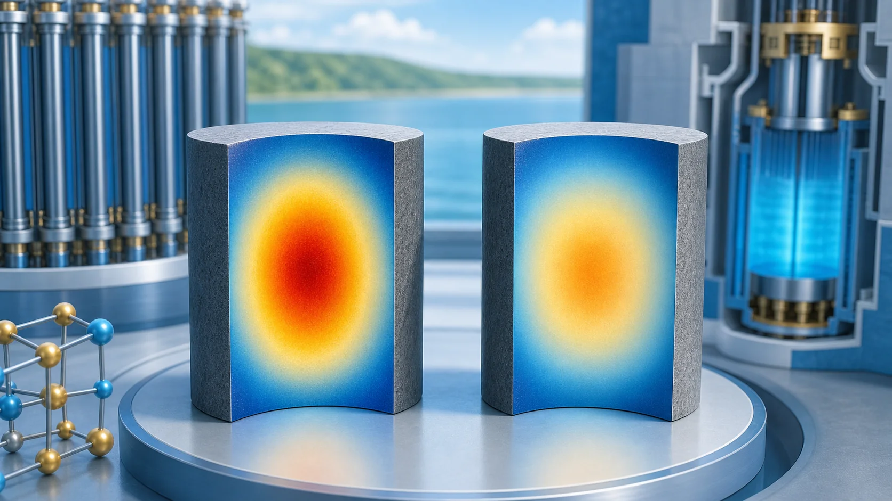
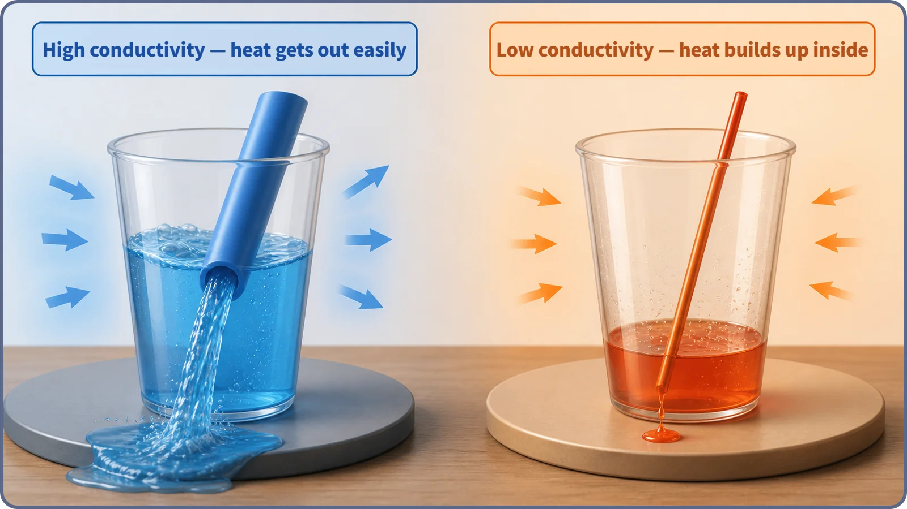
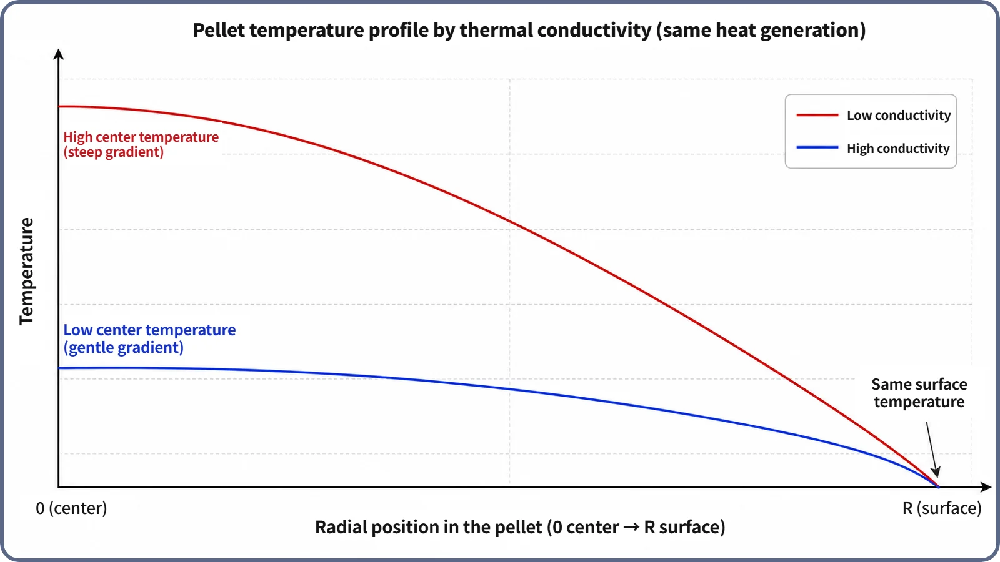

Heat Transfer & Thermal Hydraulics · 129
Wide Straw, Narrow Straw — Why Thermal Conductivity Sets Fuel Temperature
Like sipping through a narrow straw, a poorly conducting fuel lets heat out slowly, so the center of a UO₂ pellet runs far hotter than its cooled surface.

For the same heat generation, the temperature difference between a fuel pellet's center and surface is inversely proportional to its thermal conductivity: ΔT = (q‴ × R²) / (4k). Halve the conductivity and the gap doubles. Uranium dioxide (UO₂), the ceramic fuel in most commercial reactors, conducts heat considerably worse than metals, so its center runs much hotter than its coolant-cooled surface, a key input to fuel design and operating limits.
Two straws, two coffees
Picture two identical iced coffees. Into one you put a fat bubble-tea straw; into the other, a skinny little stirrer straw. Sip both just as hard: the fat straw delivers a refreshing gulp, while the skinny one gives you a trickle. With a narrow straw, no matter how hard you try, most of the drink just stays in the cup.
Something very similar happens inside the fuel of a nuclear power plant. Only here, what has to get out isn't a drink but heat, and the width of the straw corresponds to how easily the material lets heat pass through it: its thermal conductivity.
A narrow straw changes what happens in the cup
As we saw earlier, heat moves through a material by conduction, with atoms and molecules handing vibrational energy to their neighbors. But there's one thing to add. The phenomenon of "heat passing through" may be the same everywhere, yet how well it happens differs enormously from one material to another. The number that measures that "how well" is the thermal conductivity, written k, in units of W/(m·K). A large value means heat flows out easily; a small value means heat has trouble getting out. A low-k material is, so to speak, a narrow straw.
Back to the straws. With a wide straw (a high-conductivity material), the drink leaves easily and doesn't sit in the cup for long. With a narrow straw (a low-conductivity material), the drink can't get out quickly, so however hard you sip it stays pooled in the cup, and it can even feel like pressure is building up inside. Heat behaves the same way. In a low-conductivity material, the path out is a narrow straw, so the heat being produced can't escape fast enough and keeps piling up inside the material.

Fuel rods have a "straw" too — a path for heat
Inside a reactor fuel pellet (a small, pill-shaped piece of uranium fuel), fission doesn't happen only at the surface; it happens evenly throughout the pellet's volume. So heat is made everywhere in the pellet. To stay in balance, that heat has to flow from the center to the surface, then through the cladding outside it, and into the coolant.
The "width of the straw" on that path from center to surface is the fuel material's thermal conductivity. If the material conducts well, heat made at the center gets to the surface fairly easily, and the temperature difference between center and surface stays modest. If it conducts poorly, the path out is like a narrow straw: even if the surface is kept fairly cool by the coolant, heat can't escape from the middle, so it pools there and the center temperature climbs much higher.
Checking the temperature gap with one simple relation
This relationship can be summed up in a tidy formula. If we simplify by assuming heat is produced evenly across the pellet, the difference between the pellet's center temperature and its surface temperature (ΔT) is roughly:
ΔT = (q‴ × R²) / (4k)
Here q‴ is the heat generated per unit volume (how much heat each bit of the pellet produces per second), R is the pellet radius, and k is the material's thermal conductivity. Look closely and the answer jumps out. With the same heat generation (same q‴) and the same pellet size (same R), the temperature difference ΔT is inversely proportional to k. If the thermal conductivity is cut in half, the center-to-surface temperature difference doubles. The straw intuition, "the narrower the straw, the more stays in the cup," carries straight over: the lower the thermal conductivity, the more heat pools at the center and the bigger the temperature difference.
The graph makes it obvious
Words only go so far, so let's compare two imaginary fuel materials that produce the same amount of heat. One has low thermal conductivity (say, around the value of UO₂, the material actually used as nuclear fuel); the other has much higher conductivity (say, a material with metallic properties).

Both curves are parabolas that rise from the surface toward the center, and that shape is the same for both materials. What differs is how steeply the parabola climbs. The low-conductivity curve shoots up far higher at the center, while the high-conductivity curve stays gentle, with a center temperature not much different from the surface. The same amount of heat is being produced, yet how easily it gets out changes the center temperature this much.
UO₂ fuel is actually closer to a narrow straw
Now to real reactors. The fuel used in most commercial nuclear power plants today isn't pure uranium metal but uranium dioxide (UO₂), a ceramic-like compound of uranium and oxygen. And UO₂ is not a particularly good conductor of heat. Compared with metals, its thermal conductivity is quite low.
That means that even though the outer part of a UO₂ fuel rod (where it meets the cladding) is kept relatively cool by the coolant, the middle of the pellet runs much hotter, just as in the graph. Fortunately UO₂ has a very high melting point (over 2,800 °C), so melting isn't a concern in normal operation. Still, the large center-to-surface temperature difference leaves designers with important homework. Putting an upper limit on how much heat a single fuel rod may produce (a value called the linear heat rate), and paying attention to the thermal stress that builds up as a large center-to-surface temperature difference makes the material expand unevenly, are both design considerations that trace back to this low thermal conductivity. Conversely, a metal-type fuel with high thermal conductivity produces a smaller center-to-surface temperature difference for the same heat, which allows a more generous temperature margin.
One term worth separating: the property that governs heat moving through the inside of a solid (thermal conductivity, k) is different from the value that describes how efficiently heat passes between the surface of a fuel rod and the coolant flowing past it (the heat transfer coefficient, h). The latter is about a flowing fluid carrying heat away, a separate topic for when we look at coolant flow.
Today in one breath
- Thermal conductivity is the material property that says how easily heat passes through a substance; think of the difference between a wide straw and a narrow one.
- With the same heat generation, a low-conductivity material traps heat inside and its center temperature rises sharply, while a high-conductivity material lets heat out and keeps its center relatively cool.
- The relationship is summed up as ΔT = (q‴ × R²) / (4k): the temperature difference is inversely proportional to thermal conductivity.
- UO₂ fuel has a considerably lower thermal conductivity than metals, so even with its surface cooled by the coolant its center runs much hotter, an important consideration in setting core design and operating limits.
Next, we'll follow that heat as it leaves the pellet and passes through the cladding, a thin metal wall, and see what happens to it there.